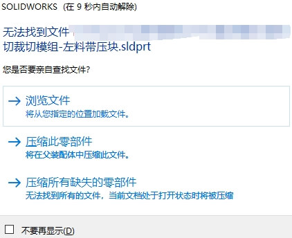
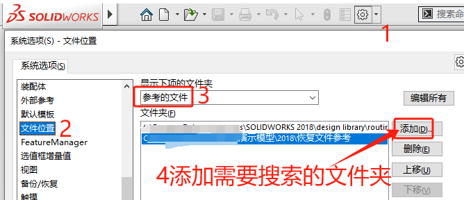
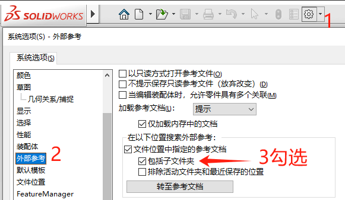
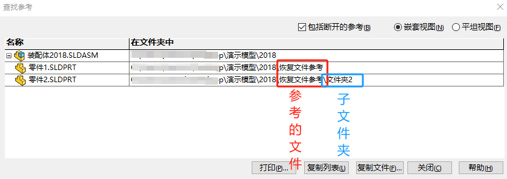

恢复文件参考
当我们无意中移动文件位置时，会造成装配体内的零部件参考路径找不到，从而造成文件丢失（无法找到文件的情况）
手动恢复
当然，你可以手动【浏览文件】到已知移动的位置来加载需要的文件，或是暂时【压缩此零部件】的方式打开装配体。
但是这个方法需要我们能清楚找到文件被移动到了何处。有一点的操作局限性。
自动查找
自动查找的方法，需要我们在【系统选项-文件位置-参考的文件】里添加搜索的路径，那么该路径下的同名文件将被加载到装配体。并通过报存可以恢复参考。
不过默认情况下该方法只能是查找自身文件夹内的文件（而不会继续往“子文件夹”内查找，这个是为了性能考虑）。因此，我们还需在【系统选项-外部参考】勾选“包括子文件夹”选项。
如下，当打开丢失模型的装配体时，因为有“参考的文件”及其“子文件夹”设置，软件将会去设置中查找并关联参考进装配体。此时我们点击保存装配体就能恢复文件的参考。
补充说明
保存后的装配体是已经更新了零部件的参考关系了，那就可以将【系统选项-文件位置-参考的文件】设置路径去除。并免其他装配体同名参考问题出现。